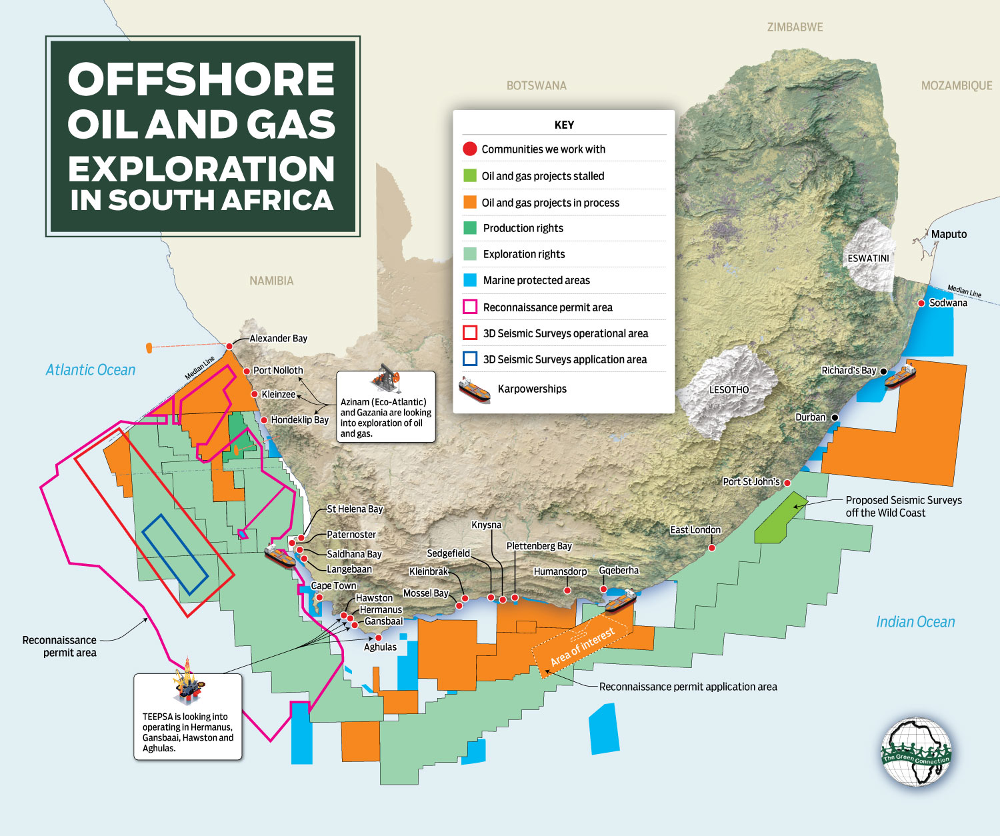

South Africa sits on significant undiscovered and partially discovered gas resources across multiple basins — from the onshore Karoo shale (209 Tcf recoverable) to deep-water offshore discoveries (3.4 Tcf at Brulpadda/Luiperd) to the emerging Orange Basin play on the Atlantic margin. Combined with pipeline imports from Mozambique (currently supplying ~80% of SA's gas) and planned LNG import terminals, the country's gas future is a complex puzzle of domestic exploration, regional integration, and global LNG markets. This page maps every major gas source — domestic and import — that could supply South Africa's energy transition.

Offshore · Bredasdorp Basin · ~100-150m depth
SA's only producing gas fields, feeding the Mossel Bay GTL refinery since 1992. Near depletion. Current production ~20-30 Bcf/yr, declining rapidly. PetroSA seeking import LNG to keep GTL plant running.
Onshore · Karoo-age coal seams · Lephalale basin
Coal-bed methane (CBM) in the Waterberg coalfields. May require fracking. Environmental authorisation applications submitted. Potential resource: unquantified but possibly significant given massive coal reserves.
Offshore · KwaZulu-Natal · Mesozoic rift basins
Unexplored Mesozoic rift basins offshore Durban. No discoveries to date. Seismic data limited. Potential analogous to Mozambique's Rovuma Basin (100+ Tcf). Long-term speculative play.
Pande/Temane fields · 865 km pipeline to Secunda · Operating since 2004
Currently supplies ~70-80% of SA's gas to Sasol and industrial users in Mpumalanga/Gauteng. Production declining — "gas cliff" expected ~2028. New gas from Rovuma Basin (Coral South FLNG, 2022) not yet contracted to SA.
Richards Bay (Coega) · Saldanha Bay · Matola (Maputo) · Mossel Bay
Multiple LNG import terminal proposals to replace declining Mozambique pipeline supply. Coega/Richards Bay FSRU is the most advanced. Mossel Bay terminal to feed PetroSA GTL. LNG imports likely to dominate SA gas supply from 2028 onward.
Orange Basin · Venus & Graff discoveries · Kudu gas field
Namibia's massive Orange Basin discoveries (TotalEnergies' Venus, Shell's Graff/Jonker — billions of barrels) could supply SA via pipeline or LNG. Kudu gas field (1.3 Tcf) has been considered for gas-to-power for decades. Regional integration potential.
Qatar · US Gulf Coast · West Africa · Flexible supply
Once import terminals are built, SA can access global LNG spot markets. Current spot prices $8-14/MMBtu. Qatar and US Gulf Coast are dominant suppliers. SA would compete with European and Asian buyers — LNG is a globally traded commodity, not a captive resource.
South Africa faces a gas supply crisis. The Mozambique pipeline — providing 70-80% of the country's gas — will begin declining around 2028. Domestic discoveries (Brulpadda/Luiperd, 3.4 Tcf) are stranded without market infrastructure. The Karoo shale (209 Tcf) remains untested and politically contested. The Orange Basin — potentially SA's largest prize — is unexplored on the SA side while Namibia has made world-class discoveries just across the maritime border.
The most likely near-term pathway: LNG imports replace declining Mozambique pipeline gas (~2028-2030), while domestic exploration continues (Orange Basin drilling, Karoo scientific programme, replacement operator for Brulpadda/Luiperd). In the medium term (2030s), a hybrid model emerges: LNG imports provide baseload supply security while domestic gas (offshore Orange Basin, potentially Karoo) begins to contribute. Long-term: if the Orange Basin delivers Namibian-scale discoveries, SA could achieve gas self-sufficiency. If not, the country remains dependent on global LNG markets.
Sources: PASA · US EIA World Shale Gas Resources (2013) · TotalEnergies · DMRE Gas Master Plan · ROMPCO pipeline data · Upstream newspaper · CSIR SEA for Shale Gas (2016)